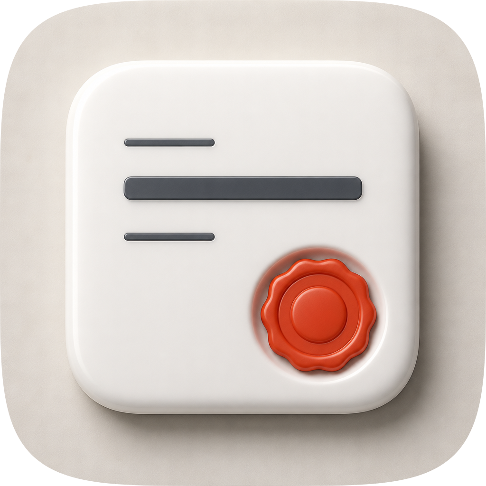
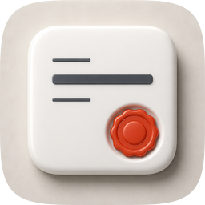
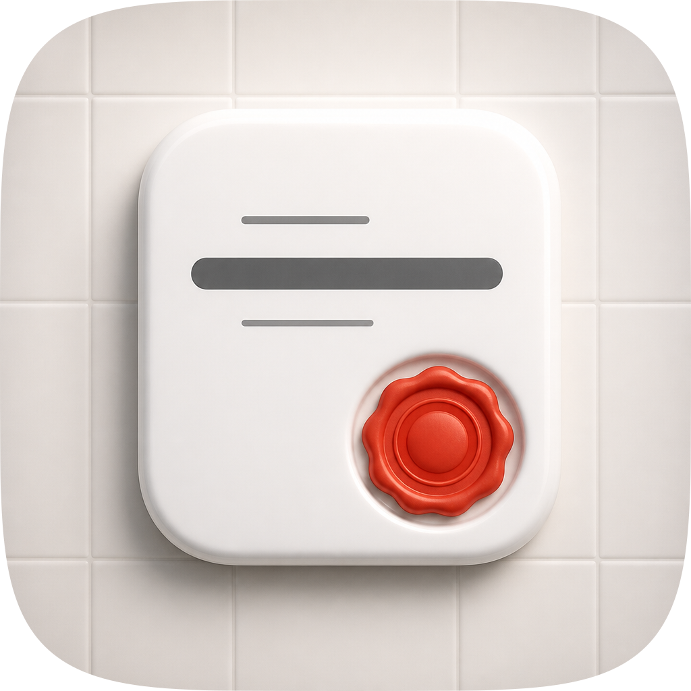
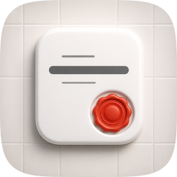
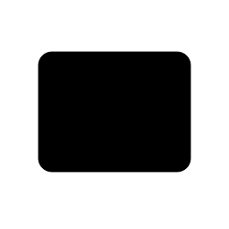
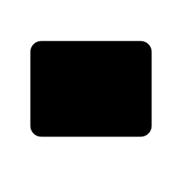

Direction “The Stamped Value” · four takes across two engines · audited on real
renders at 1024 / 128 / 64 / 48 / 32 / 16 css px from 2× retina sources, with the variant and
silhouette reads captured rather than reasoned.
What actually happened here, in order, because the first version of this
sheet recorded a commission that was short of the pipeline's floor. The icon was built on
18 Aug 2026 and shipped with no contact sheet at all; a retrospective sheet was written on 19 Aug
carrying one take against a floor of three, and saying so at the top. On 19 Aug the
remaining engines were commissioned. Engine C ran — two GPT Image 2 rasters against
four porcelain-register exemplars from create-mac-icon/references/corpus/apple-2026/
(apple-31 News, apple-26 Reminders, apple-28 Photos, apple-23 Safari), both on this page as C1 and
C2 with their sources in this directory. Engine B refused. Arrow 1.1 returned
“A positive credit balance is required for all requests, including BYOK” from the
gateway, so there is no Arrow take and none is displayed. The skill's rule for an unavailable engine
is to widen Engine A rather than to present one take as three, so A2 was authored by hand
from its own build script — a real fourth artifact, aimed squarely at the two checks the shipping
master measurably loses. There is still no fidelity loop and no blind judge panel: the material was
not scored numerically, because torch is absent on this machine and the gate refuses a tier that
cannot see material. Every score below was read off the renders and the measurements beside them on
19 Aug. Nothing shipped was changed:icon.png,
icon-256.png and icon-128.png are byte-identical to 18 Aug, and
icon-src.svg is byte-identical to the layer-plan edit made earlier on 19 Aug, which
itself moved no pixel — this pass wrote no shipped file at all. The recommendation at the foot of
this page is a recommendation, not an action taken.
The four icon takes, with renders, rubric scores and verdicts
Take
Hero at 1024, then renders at 128 / 64 / 48 / 32 / 16 css px (2× retina sources), plus the 16px squint magnified
Rubric
Verdict
A2 · icon-A2-inlaid.svgEngine A widened, hand-authored layered SVG — the highest score, and recommended
hero 10241286448321616 ×6
11 / 12loses 11
The same value-plate, in two materials instead of one: a graphite glaze over
a porcelain body, where every mark is that body showing through. The measurement is
inlaid rather than printed, each inlay carrying the glaze's dark cut edge along its lit
side; the socket is a countersink through the glaze, so the seal is seated on a 20px porcelain
collar; and a porcelain fillet runs the far bottom-right edge as bounce off the ground. Plate
geometry, seal centre, socket radius and lobe count are held identical to A on purpose, so the
figure-ground delta is attributable to value and material rather than to a relayout. It takes
#7 from 1.16:1 to 8.24:1 and #10 from 1.07:1 to 9.08:1 in grayscale, and its 16px luminance
spread is 0.320 against a marketplace median of 0.176. What it loses: #11. A
dark landscape card with pale bars and a disc at the right reads, at a glance, as a payment
card — and this skill is about a measured value carrying its provenance, so the certificate read
A has is the semantically correct one and this take trades it away.
A · icon-src.svgEngine A, hand-authored layered SVG — the take that currently ships
hero 10241286448321616 ×6
10 / 12loses 7, 10
A porcelain value-plate 680×536 standing above a porcelain ground,
carrying three neutral marks — a thin label rule, one heavy figure bar, one thin footnote rule —
with a twelve-lobed vermilion seal seated proud in a countersunk socket at its lower right. The
argument is that a number and its provenance are two objects and the second is pressed onto the
first, and it is the only take here whose category read is right: a sealed certificate, not a
card. What it loses: #7, because the plate separates from its field by a
hairline and a shadow rather than by value (1.16:1 from the constants, 1.07:1 measured); and
#10, because that same relationship means the object dissolves the moment the render is reduced
to luminance — captured this time rather than reasoned, in the grayscale strip below. Its 16px
luminance spread of 0.157 is below the marketplace median of 0.176 and the lowest of
the four takes, which is the same defect measured at the size the marketplace tile is
actually seen at. Exactly on the delivery bar.
C1 · icon-engineC-1fecdf.pngGPT Image 2 raster, four porcelain-register corpus references — the material donor

hero 1024

1286448321616 ×6
8 / 12loses 3, 7, 9, 10 — and 3 is non-negotiable
The best material in the set and the reason it was commissioned: generous
rounded arrises on the slab, real ambient occlusion in the countersink, a seal with genuine wax
body and a boss that catches the light, and — the one thing no hand-authored take here does —
the seal straddling the slab's lower-right edge so it enters the silhouette. Out on #3
regardless of the score: filled solid, its slab is a near-square rounded rectangle at 71% of
tile width, which is the tile's own silhouette inset inside itself and names nothing. Then #7
at 1.08:1, the same porcelain-on-porcelain failure as A; #9, because a flat canvas-textured
warm field with no cushion, no rim and no vignette is a product render rather than Tahoe; and
#10, because a single flat raster layer is the named 76% failure mode. Salvage worth taking into
a master: the seal crossing the plate edge, and the arris radius on the socket wall.
C2 · icon-engineC-64e349-2.pngGPT Image 2 raster, same four references, same prompt

hero 1024

1286448321616 ×6
8 / 12loses 3, 7, 9, 10 — and 3 is non-negotiable
The same object on an invented ground: a ceramic wall of grouted tiles that
nothing in the brief asked for. It loses the same four checks for the same reasons and is worse
inside each of them. #7 is 1.09:1, the weakest of the four. #9 fails twice over, because a
grouted wall is a literal scene rather than the era's language, and because the seal casts
nothing onto it, so the object hangs on the wall. And the grout is not merely decoration: it
puts a second competing rectilinear structure in the tile, visible in the silhouette strip
below as cross-lines that a luminance threshold cannot tell from the object, and it lifts the
16px noise floor — 0.194 against C1's 0.225 with a duller mark set. A useful negative result
about Engine C: four same-register references transferred the material and the light faithfully
and did not constrain the ground at all.
The 12-point rubric, scored 19 Aug against the renders on this page
Check
A2
A (ships)
C1
C2
1. Mask discipline (non-negotiable)
PASS clip
PASS clip
PASS masked
PASS masked
2. Grid adherence (non-negotiable)
PASS 66.4%
PASS 66.4%
PASS 71%
PASS 62%
3. Silhouette test (non-negotiable)
PASS weak
PASS weak
FAIL
FAIL
4. 16px squint (non-negotiable)
PASS 0.320
PASS 0.157
PASS 0.225
PASS 0.194
5. Single light model
PASS
PASS
PASS
PASS
6. Palette economy
PASS
PASS
PASS
PASS
7. Figure-ground ≥3:1
PASS 8.24:1
FAIL 1.16:1
FAIL 1.08:1
FAIL 1.09:1
8. Depth coherence
PASS 5 planes
PASS 4 planes
PASS
PASS
9. Era coherence
PASS
PASS
FAIL
FAIL
10. Variant robustness (76% of the corpus fails here)
PASS 9.08:1
FAIL 1.07:1
FAIL 1 layer
FAIL 1 layer
11. Personality
FAIL card read
PASS
PASS
PASS
12. No-text
PASS
PASS
PASS
PASS
Total
11 / 12
10 / 12
8 / 12
8 / 12
#2 is a note on all four, not a deduction. A and A2 put 66.4% of tile width
into the plate against the catalogue's 55–65% composition constant, C1 71%, C2 62%. Both
hand-authored takes are optically centred: the plate's own centre sits at y=500 against the
tile's 512, a deliberate 12px lift, with identical 172px left and right margins.
#3 is a weak pass on both hand-authored takes, and the reason is the same for both.
The silhouette strip below is the real test — every authored fill and stroke forced to black with
the ground switched off. Both come back as a plain landscape rounded rectangle: nameable as a
plate, but the seal contributes nothing, because at r=112 centred on (692, 594) inside a
plate whose edges are x=852 and y=768 it is inset by roughly 28px and never breaks the outline.
The previous version of this sheet claimed “a lobed disc breaking its lower-right
corner”; the render says otherwise, and that claim is withdrawn. C1 is the only take here
that gets the seal into its silhouette, and it is the fix to steal.
#3 fails on both rasters for a structural reason, not a stylistic one. Their
slab is a rounded square inset in a rounded square, so the tile's own silhouette is restated
inside itself and the filled shape names nothing. A and A2 clear the same check only because
their plate's 1.27 aspect distinguishes it from the tile it sits in.
#7's failures are all on the object, never on the marks. A's figure bar reads
6.85:1 against its plate and its seal body 3.33:1, both clear; it is the plate against the ground
that measures 1.16:1. A2 inverts exactly that relationship and inherits one number under the
floor in exchange: its wax body against the glaze is 2.86:1, so the seal is carried by the
porcelain collar it sits in (3.19:1) rather than by the glaze. That collar is the surface the
seal actually sits against, which is why the check passes — but it is a load-bearing detail
rather than a comfortable margin.
#10 is now a capture rather than a reasoned read, and it does not go one way.
Under grayscale and Tinted — which preserve luminance and discard hue, so whatever survives one
survives the other — A, C1 and C2 all collapse to about 1.08:1 and A2 holds at 9.08:1. Under
Clear, where the ground layer is removed and the system supplies the field, the result reverses:
A's porcelain plate reads 15.40:1 on a dark desktop and 1.03:1 on a light one, A2's graphite
plate 1.59:1 on dark and 9.43:1 on light. Neither is unconditionally robust. A2 takes the point
because Tinted is the named failure mode that 76% of the corpus loses and Clear-on-dark is not,
and because A fails Default as well as Tinted while A2 only fails Clear-on-dark. Both rasters
fail structurally: a flat single-layer raster has no ground layer to remove, so the Clear read
cannot even be attempted.
#11's failure on A2 is a category read, not a missing device. The seal in a
visible countersink is present in all four takes and it is distinct from its nearest sibling —
clarify's device is three option cards with one drawn out of the stack, a vermilion
selection dot and a margin note, checked in plugins/clarify/assets/build_icon.py, and
carries no seal at all. What A2 loses is what the object is: dark landscape card, pale
bars, disc at the right. A skill whose subject is a measured value carrying its provenance mark
wants the certificate reading, and A is the take that has it.
Not measured, and therefore not claimed. The material was never scored: torch
is absent on this machine, and the fidelity gate refuses a tier where the material metric cannot
run rather than guessing. No fidelity loop ran and no blind judge panel saw any of these four, so
every verdict here is one reader's, read off the renders on this page.
Rubric #10, captured: the shipped tile under grayscale, and under Tinted
Rubric #10, Clear: the ground layer removed, the object on a desktop
A2 on dark — 1.59:1A2 on light — 9.43:1A on dark — 15.40:1A on light — 1.03:1
C1 and C2 are absent from this row on purpose. A flat raster has no bg
layer to switch off, so the Clear read cannot be attempted on either of them, and that impossibility
is the whole content of their #10 failure rather than a gap in this sheet.
Rubric #3, the silhouette test

A2 — landscape rounded rectangle; the seal is inset and never reaches the outline

A — identical outline, identical liabilityC1 — segmented at L=0.7517; a rounded square, and the seal does break its edgeC2 — segmented at L=0.7530; the grout survives the threshold as cross-lines
The two SVG takes are the real test: every authored fill and stroke forced to black
with the ground switched off. The two rasters have no layer to isolate, so their figure is segmented
by luminance at the midpoint between slab and ground — which is only possible at all because a
threshold does not need the 3:1 that a human eye does, and the ragged edges and surviving grout are
the same 1.08:1 failure seen from the other side.
Measured, not asserted
Contrast ratios are WCAG relative-luminance. The constants column is computed
from the named colours in build_icon.py and build_icon_a2.py; the render
column is the median luminance of one fixed sample box on the plate face against one on the tile
ground, the same two boxes for every take so the numbers compare. The 16px figure is the family
metric: luminance standard deviation of the 32px render downsampled to 16 and composited over white,
against a marketplace median of 0.176. All of it reproduces from
python3 measure_variants.py.
Take
#7 constants
#7 render
#10 grayscale
#10 Clear dark / light
16px std
vs median
A2
8.24:1
9.08:1
9.08:1
1.59:1 / 9.43:1
0.320
1.82×
A (ships)
1.16:1
1.07:1
1.07:1
15.40:1 / 1.03:1
0.157
0.89×
C1
— raster
1.08:1
1.08:1
no bg layer
0.225
1.28×
C2
— raster
1.09:1
1.09:1
no bg layer
0.194
1.10×
Marks and seal, for completeness: A's figure bar 6.85:1 against its plate and its seal body 3.33:1;
A2's inlays 9.12:1 and 7.23:1 against the glaze, its seal 2.86:1 against the glaze and 3.19:1
against the porcelain collar it is seated on.
Recommendation: ship A2 (icon-A2-inlaid.svg), 11 / 12 — and
nothing has been swapped, because that is not this sheet's call to make. A2 is the better
icon on every number that decides how a marketplace tile behaves: it closes both of A's measured
failures with margin (#7 from 1.16:1 to 8.24:1, #10 from 1.07:1 to 9.08:1 in grayscale) and it
carries 0.320 of luminance spread at 16px where A carries 0.157 — below the family median, and the
lowest of the four takes, at exactly the size a Finder row and a plugin tile are read. A's identity
is a hue relationship at 1.07:1; A2's is a value relationship, and a value relationship is what
survives Tinted. The shipped icon-src.svg, icon.png,
icon-256.png and icon-128.png are untouched; the banner this plugin still
owes derives from whichever master ships, so the swap decides work downstream and belongs to a
person.
Known liabilities on A2, in the order a revision should take them.(1) The card read (#11), and it is the reason this is a recommendation rather than an
obvious win. Dark landscape plate, pale bars, disc at the right: the tile says payment card
where the skill means a measured value carrying its provenance. A is the take that reads as a sealed
certificate, and a person may reasonably weigh that above two measured checks — the rubric arithmetic
does not settle taste.
(2) The silhouette is a plain rounded rectangle on both hand-authored takes.
Measured on the render, not assumed: the seal is inset ~28px and never reaches the plate's outline,
so filled black neither take names its own signature move. C1 solved this by letting the seal
straddle the plate's lower-right edge, and moving SEAL_CX / SEAL_CY outward
would fix #3's weak pass and the card read at once — which is the single highest-value edit
available here, and it applies to A and A2 equally.
(3) A2 shares proctor's value scheme. Graphite object on porcelain ground is
proctor's established sub-register (its front face reads L 0.141 against a 0.95 ground); A2's glaze
is darker still at L 0.046. Different silhouette, same register, two tiles in a 38-plugin lineup.
(4) A2's seal clears #7 on the collar, not on the plate. 2.86:1 against the glaze,
3.19:1 against the porcelain collar. Widen the collar or lift the wax ramp one step and the margin
stops being load-bearing.
(5) Engine B never ran — Arrow refused on the gateway credit balance — so this set
has no independent vector take, and the widened Engine A is the skill's named substitute rather than
an equivalent. (6) The material was never scored, torch being absent, and no blind
panel judged any of it. (7) A third option neither take represents, and the one to
reach for if the card read is disqualifying: keep A's porcelain plate and its certificate reading,
and put the dark mass inside the plate — the value region recessed into a graphite well
holding the bright figure bar. That buys grayscale survival without inverting the object, and without
borrowing proctor's register.
Rubric: the 12-point icon audit in
create-mac-icon/references/icon-directions.md (mask discipline, grid, silhouette, 16px
squint, single light model, palette economy, figure-ground, depth coherence, era coherence, variant
robustness, personality, no-text) — checks 1–4 non-negotiable, delivery bar ≥10/12.
Renders produced by
python3 ../../create-mac-icon/skills/create-mac-icon/scripts/audit_sheet.py render . --take
master=icon-src.svg:svg --take A2=icon-A2-inlaid.svg:svg --take C1=icon-engineC-1fecdf.png:raster-mask
--take C2=icon-engineC-64e349-2.png:raster-mask at 1024 / 256 / 128 / 96 / 64 / 32 via
rsvg-convert; every take is named explicitly because bare render infers
kinds from extensions and registers a full-bleed raster unmasked, which its own check
then rejects. The two raster takes are audited on their squircle-masked versions. Everything in
variant-renders/ and every number in the tables above comes from
python3 measure_variants.py in this directory. Each take's source is in this directory
under the name cited beside it, and recorded in
audit-renders/render-manifest.json. Verified by
audit_sheet.py check ..